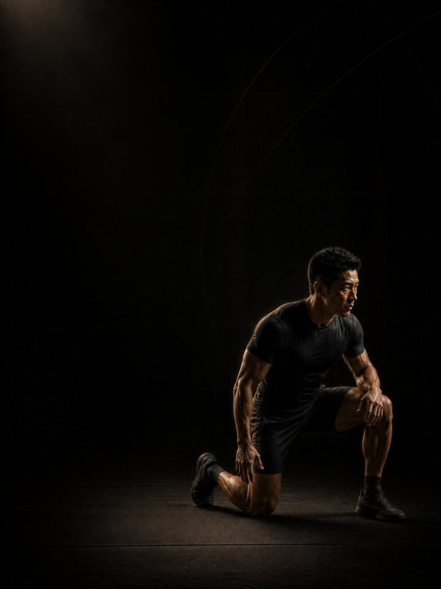

المصارعة والجوجيتسو · الاستشفاء
امنح الرقبة والكتفين والمفاصل فرصة التعافي بعد الموسم، ثم أعِد بناء الرياضي من تحتها.
- مناسب لـلاعبي الجوجيتسو البرازيلي والمصارعة والفنون القتالية المختلطة بعد موسم المنافسات
- أيام التدريب3 أيام غير متتالية في النادي أسبوعيًا، مع نسخة قصيرة من يومين
- مدة الجلسة48–60 دقيقة
- المعداتنادٍ متكامل، يشمل الأجهزة وبار عقلة ومنشفة
- الصيغةملف PDF للهاتف، وكل تمرين مرتبط بفيديو توضيحي
لمن هذا البرنامج
للاعبي المصارعة والجوجيتسو الخارجين من موسم. موسم المصارعة يترك فاتورة محدّدة: رقبة حُمِّلت من كل زاوية، وكتفان تعرّضا للالتواء القسري، وأصابع لا تستقيم في الصباح، ومفاصل تؤلم دون تشخيص. ولا شيء من ذلك يحظى بفرصة ليهدأ وأنت تتدرّب، لأن البساط لا يتوقّف عن الطلب.
هذه الكتلة هي تلك الفرصة. تبدأ بأربعة أسابيع بلا احتكاك على البساط وبلا أي تحميل للرقبة إطلاقًا، بينما يتدرّب بقية الجسم بشكل طبيعي. ثم تعيد البناء، ويعود الاحتكاك وتمارين الرقبة تدريجيًا. الهدف ليس أن تكون في أفضل لياقتك في النهاية، بل أن تبدأ العام التالي بجسم تعافى فعلًا.
موقعه في السنة: الكتلة 4 من 4. الأساس، ثم البناء، ثم المنافسة، ثم الاستشفاء، ثم العودة إلى الأساس. نفّذه مباشرة بعد المنافسة، لا بعدها بثلاثة أشهر.
خذ أسبوعين بعيدًا عن البساط أولًا. ابتعاد تام: لا نزال حر، ولا تكرار للتقنيات، ولا «تقنيات خفيفة فقط». هذا أثمن جزء في الكتلة، وأكثره تعرّضًا للتجاهل.
أسبوعك
ثلاثة أيام غير متتالية في النادي، بلا ضغط البساط. وتسير الجلسات بشدة أقل بكثير مما كانت عليه في المعسكر.
خارج الموسم، 3 أيام في النادي
| الأحد | الاثنين | الثلاثاء | الأربعاء | الخميس | الجمعة | السبت |
|---|---|---|---|---|---|---|
| اليوم 1 | راحة | اليوم 2 | راحة | اليوم 3 | راحة | راحة |
النسخة القصيرة، يومان في النادي
| الأحد | الاثنين | الثلاثاء | الأربعاء | الخميس | الجمعة | السبت |
|---|---|---|---|---|---|---|
| اليوم 1 | راحة | راحة | اليوم 2 | راحة | راحة | راحة |
كل جلسة تسير بالطريقة نفسها:
- الإحماء، 8–10 دقائق. التسلسل نفسه في كل مرة. تنشيط الأرداف والوركين والكتفين.
- السرعة والقدرة الانفجارية، 12–15 دقيقة. في المرحلة 1 تكون حجلات الإحماء هي الهبوط الوحيد. ومن المرحلة 2، ضرب الكرة الطبية والرمي الدوراني وأرجحة الكيتل بل الثقيلة، مع تعافٍ كامل بين المجموعات.
- القوة، 20–25 دقيقة. الرفعات الرئيسية، مع دقيقتين إلى ثلاث دقائق بين المجموعات.
- تمارين الأنسجة، 8–10 دقائق. في النهاية، ولا تُحذف أبدًا.
أصلح ما كنت تتدرّب متجنّبًا له. لكل لاعب مصارعة شيء من ذلك. نفّذ برنامج AXIS التصحيحي المناسب إلى جانب المرحلتين 1 و2. فبرنامج الرقبة أو الكتف أو المرفق سيفيد موسمك القادم أكثر من شهر آخر من النزال الحر.
كيف تتقدّم الأسابيع الـ12
ثلاث مراحل، مدة كل منها أربعة أسابيع. المصارعة تحمّل الأنسجة كما لا يفعل أي شيء آخر تقريبًا: ثبات طويل، ومفاصل يأخذها شخص آخر إلى نهاية مداها، ورقبة تمتص القوة من كل اتجاه. والأوتار ومحافظ المفاصل والأقراص تتكيّف على ساعة أبطأ بكثير من العضلات، ولا تعيد بناء نفسها إلا حين ينخفض الطلب فعلًا. والموسم لا يمنح مثل هذه الفرصة، لذلك تبنيها هذه الكتلة، ثم تعيد بناء القوة فوقها. الحجم يرتفع أولًا، ثم الحمل، ثم الرقبة والاحتكاك أخيرًا.
| الأسابيع 1–4 | الأسابيع 5–8 | الأسابيع 9–12 | |
|---|---|---|---|
| المرحلة | إصلاح الأنسجة | التضخّم العضلي | القوة القصوى |
| الهدف | منح أنسجة الرقبة والمفاصل وقتًا للتعافي. أجهزة، ومدى حركة مضبوط، وتكرارات أعلى، ولا شيء يحمّل الرقبة أو المفاصل في نهاية مداها. | بناء الكتلة العضلية بعيدًا عن البساط. تعود الأوزان الحرة وتمارين القبضة، وتحصل الرقبة على أولى تمارين الثبات اللطيفة. | إعادة بناء القوة القصوى وقدرة الرقبة على التحمّل. ترتفع الأوزان، وتطول تمارين القبضة، وتعود تمارين الرقبة إلى جرعة طبيعية. |
| المجموعات الفعلية أسبوعيًا | 54 | 62 | 65 |
| متوسط الجهد | جهد 6.1/10، نحو 4 تكرارات في الخزان | جهد 7.0/10، نحو 3 تكرارات في الخزان | جهد 7.9/10، نحو تكرارين في الخزان |
| مرات الهبوط أسبوعيًا | 60 | 60 | 60 |
| الرميات أسبوعيًا | 0 | 0 | 20 |
المرحلة في لمحة
المجموعات التدريبية أسبوعيًا حسب ما تدرّبه. الخط المتقطع هو مستوى الجهد.
موقع هذه المرحلة في السنة التدريبية
نفّذ المراحل الأربع بالترتيب لتكتمل سنة تدريبية كاملة.
الجهد (RPE) تقييم من 1 إلى 10 لمدى صعوبة المجموعة. والتكرارات المتبقية في الخزان هي عدد التكرارات الجيدة الإضافية التي كنت تستطيع أداءها، فـ«نحو 2» تعني أنه يتبقى في الخزان تكراران.
يجب أن تبدو المرحلة 1 سهلة أكثر من اللازم تقريبًا. هذه هي الوصفة. والمرحلة 2 هي مرحلة بناء العضلات في سنتك. وبحلول الأسبوع 12 تستطيع أن تبدأ كتلة الأساس للمصارعة والجوجيتسو دون فترة تمهيد.
أسابيع التخفيف: الأسبوعان 6 و12 أخف. ويجب أن يتركك الأسبوع 12 مستعدًا لبدء الكتلة 1، لا محتاجًا إلى استراحة أخرى.
القواعد التي تجعله ينجح
- أسبوعان بعيدًا عن البساط تمامًا. لا نزال حر، ولا تكرار للتقنيات، ولا تقنيات خفيفة. إنها أرخص وسيلة لتحسين الأداء في هذه الرياضة.
- المرحلة 1 لا تحمّل الرقبة إطلاقًا. لا تمارين ثبات خفيفة، ولا جسر حذر. لا شيء، لمدة أربعة أسابيع. الرقبة هي ما يحظى بأقل وقت للتعافي في هذه الرياضة، وعواقب الخطأ فيها هي الأعلى.
- الحجم قبل الحمل، والحمل قبل الاحتكاك. ترتفع التكرارات في المرحلة 1، وترتفع الأوزان في المرحلة 2 مع أولى تمارين الثبات اللطيفة للرقبة، وتصل تمارين الرقبة والاحتكاك إلى جرعة طبيعية في المرحلة 3. وعكس هذا الترتيب هو ما يجعل فترات خارج الموسم تنتج إصابات يرثها الموسم التالي.
- أصلح ما كنت تتدرّب متجنّبًا له طوال العام. الرقبة، أو الكتف، أو المرفق، أو أسفل الظهر: اختر واحدًا، ونفّذ برنامج AXIS التصحيحي المناسب إلى جانب المرحلتين 1 و2.
- أي عَرَض في الرقبة سؤال لمختصّ صحي، لا سؤال تدريب. الألم، أو الدوخة، أو الخدر أو الضعف الممتد إلى الذراع يعني أن تتوقّف وتحصل على تقييم. لا تتمرّن رغمه، ولا تختبره.
- استخدم رقم القفزة اختبارًا للتعب. ثلاث وثبات طويلة من الثبات في بداية اليوم 1 كل أسبوع، واحتفظ بأفضلها. إذا كانت أقل من متوسطك المتحرّك بأكثر من 10%، فخفّف ذلك اليوم: احذف تمارين القدرة الانفجارية ومجموعة واحدة من كل رفعة.
المصطلحات
- السنة التدريبية (الدورة الكبرى): أربع كتل بالترتيب (الأساس، والبناء، والمنافسة، والاستشفاء)، نحو 48 أسبوعًا.
- الكتلة التدريبية: 12 أسبوعًا. هذا البرنامج. تطوّر الكتلة الواحدة مجموعة واحدة من الصفات إلى مستوى محدّد.
- المرحلة (الدورة المتوسطة): 4 أسابيع. تستهدف كل منها صفة واحدة. وأربعة أسابيع اختيار لا قاعدة، فالمدة تتبع الهدف.
- الأسبوع التدريبي (الدورة الصغرى): حيث يرتفع الجهد، وتُضاف المجموعات، ويقع أسبوع التخفيف.
كيف تقيس تقدّمك
النجاح في هذه الكتلة يُقاس بما توقّف عن الألم، لا بما رفعته. والوثب الطويل الأسبوعي يتابع التعب إلى جانب ذلك.
شكل التقدّم الجيد
- الأسابيع 1–4: تتوقّف الأشياء عن الألم. تلين الأصابع، وتهدأ الرقبة، وتنام أفضل. ويبدو التدريب سهلًا لأنه مصمَّم ليكون كذلك.
- الأسابيع 5–8: تعود العضلات والقوة العامة بسرعة، وترتفع أرقام الكتف.
- الأسابيع 9–12: تعود تمارين الرقبة إلى جرعة طبيعية، ويعود الاحتكاك، على أنسجة أخذت وقتها لتتعافى.
احترم الأسبوع
احسب كل شيء: تدريب رياضتك، والنادي، والنوم. القفزات المفاجئة في حمل التدريب الأسبوعي هي أكثر ما يتنبّأ بالإصابة في الرياضة غير الاحترافية. احمِ 7–9 ساعات من النوم. إنه أقوى أداة أداء لديك، وأرخصها.
الأدلة العلمية
كل برنامج في المكتبة مبني على أبحاث منشورة، وقوة تلك الأبحاث مذكورة صراحةً لا ضمنًا. وحيث تكون الأدلة محدودة، تقول الصفحة ذلك.
| النتيجة | المصدر | ما لا تُظهره |
|---|---|---|
| تدريب القوة يخفض الإصابات الرياضية إلى أقل من ثلث معدلها في المجموعة الضابطة. أما الإطالة فلا تخفضها. | Lauersen, Bertelsen & Andersen, British Journal of Sports Medicine 2014. Meta-analysis of 25 randomised controlled trials, 26,610 participants. PMID 24100287 | نسبة الخطر 0.32 لتدريب القوة و0.96 للإطالة. تفاوتت التجارب كثيرًا، ولم تكن الجرعة موحّدة. |
| البرامج التي تتضمّن تمرين نورديك للعضلات الخلفية للفخذ تخفض إصابات العضلات الخلفية للفخذ إلى النصف تقريبًا. | van Dyk, Behan & Whiteley, British Journal of Sports Medicine 2019. Meta-analysis, 15 studies, 8,459 athletes. PMID 30808663 | نسبة الخطر 0.49، أو 0.55 بعد استبعاد الدراسات الثماني ذات خطر التحيّز المرتفع. وهي تقيس البرامج التي تتضمّن التمرين، لا التمرين وحده. |
| تمرين واحد للعضلات الضامّة، ثلاث مرات أسبوعيًا قبل الموسم ومرة أسبوعيًا خلاله، خفّض مشكلات الفخذ الداخلي المُبلَّغ عنها بنسبة 41%. | Harøy et al., British Journal of Sports Medicine 2019. Cluster-randomised controlled trial, 35 teams, 652 male footballers. PMID 29891614 | نسبة الأرجحية 0.59. مشكلات أبلغ عنها اللاعبون أنفسهم، في كرة القدم شبه الاحترافية للرجال فقط. ولم تُكرَّر الدراسة على النساء أو في رياضات أخرى. |
| أي وصفة تدريب معقولة أفضل من عدم التدريب. الأحمال الأثقل تحتل المرتبة الأعلى للقوة، والمجموعات المتعددة تحتل المرتبة الأعلى لحجم العضلات. | Currier, McLeod, Banfield et al., British Journal of Sports Medicine 2023. Network meta-analysis, 178 strength and 119 hypertrophy studies. PMID 37414459 | كانت الفروق بين الوصفات صغيرة، وكلها نجحت. |
ماذا بعد
بعد 12 أسبوعًا:
- ابدأ السنة التالية: المصارعة والجوجيتسو · الأساس
- الرقبة ما زالت تشتكي: آلام الرقبة
- الكتف ما زال يشتكي: الكتف ولوح الكتف
- المرفق ما زال يشتكي: آلام المرفق والرسغ
قبل الشراء: احصل على موافقة طبية أولًا إذا
- كان لديك ألم في الصدر، أو ضيق تنفس غير معتاد، أو خفقان، أو دوخة أثناء المجهود.
- كان لديك ضغط دم مرتفع غير منضبط، أو مرض قلبي معروف، أو خضعت لعملية جراحية مؤخرًا.
- كنتِ حاملًا أو بعد الولادة بفترة قصيرة. احصلي على موافقة وبرنامج مخصص أولًا.
- كان لديك ألم حاد في مفصل واحد لا يهدأ. ابدأ ببرنامج أكسس التصحيحي المناسب.
هذا البرنامج إرشاد عام للياقة البدنية، ولا يغني عن التقييم الطبي.